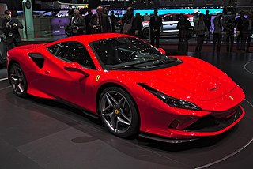

El F8 Tributo utiliza el mismo motor del 488 Pista, un motor V8 de Biturbo de 3902 cm³ (3,9 litros), con una potencia de 720 CV (710 HP; 530 kW) a las 7.000 rpm y 770 N·m (568 lb·pie) a las 3250 rpm de par máximo,67 lo que lo convierte en el Ferrari V8 convencional más potente producido hasta la fecha.8 La potencia específica es de 184,5 CV (182 HP; 135,7 kW), con una relación de compresión de 9,6:1 y un régimen máximo (línea roja) de 8.000 rpm. Cuenta con inyección directa , sistema de lubricación por cárter seco, refrigeración líquida, doble árbol de levas a la cabeza y 4 válvulas por cilindro (32 en total).2 La capacidad del depósito de combustible es de 78 litros (20,6 galAm).1 Las cámaras y colectores de admisión específicos con dinámica de fluidos optimizada, mejoran la eficiencia de combustión del motor, gracias a la reducción de la temperatura del aire en el cilindro, que también ayuda a aumentar la potencia. El aumento en las capacidades del rendimiento se proporciona de una manera más reactiva, gracias a las soluciones de aligeramiento en las masas giratorias, como las bielas de titanio derivadas de F1.
El diseño del escape y los colectores Inconel se han modificado por completo hasta los terminales. El F8 Tributo también utiliza sensores de revoluciones del turbo, desarrollados en el 488 Challenge, para maximizar la eficiencia de los turbocompresores en función de la demanda de potencia del pedal. La transmisión es una unidad de doble embrague de 7 velocidades con relaciones de transmisión mejoradas.7 Se instalan varias funciones nuevas de software en el F8 que se controlan mediante el interruptor de modo de manejo manettino en el volante.
El automóvil está equipado con el último programa de control de estabilidad y de tracción del Control de ángulo de deslizamiento lateral de Ferrari. Además, el Ferrari Dynamic Enhancer, un programa electrónico para gestionar derivas, ahora se puede utilizar en el modo de conducción Race.7 El rendimiento que afirma del fabricante es de 0 a 100 km/h (62 mph) en 2.9 segundos, de 0 a 200 km/h (124 mph) en 7.8 segundos, con una velocidad máxima de 340 km/h (211 mph), mientras que la vuelta rápida en el Circuito de Fiorano la ha logrado en 1'22.5".1 Ferrari también declaró que la carga aerodinámica del Tributo se ha incrementado en un 15 por ciento en comparación con los 488 GTB.7
Las medidas de los frenos delanteros son: 398 mm (15,7 plg) x 223 mm (8,8 plg) x 38 mm (1,5 plg); mientras que para los traseros son: 360 mm (14,2 plg) x 233 mm (9,2 plg) x 32 mm (1,3 plg).1
Los valores de emisiones de CO2 se han determinado conforme al Reglamento Europeo (CE) 715/2007, refiriéndose al ciclo WLTP y son los siguientes: 490 g (17,3 oz)/km (bajo); 246 g (8,7 oz)/km (alto); 292 g (10,3 oz)/km (mixto), 276 g (9,7 oz)/km (medio); 267 g (9,4 oz)/km (extra alto).1
Diseño
Habitáculo interior
La parte delantera del automóvil se caracteriza por el conducto S (originalmente presentado en el 488 Pista), alrededor del cual se rediseñó todo el frente del automóvil, con tomas de aire adicionales por encima de los faros. La parte delantera se completa con tomas aerodinámicas laterales que están integradas en la forma del parachoques y cuentan con dos divisores laterales aerodinámicos en negro. Los paquetes de radiadores están inclinados hacia la parte trasera, utilizando la cubierta plana para canalizar el aire caliente y minimizar la interacción térmica con los flujos dentro del arco de la rueda. El automóvil también cuenta con luces traseras cuádruples, una característica que se vio por última vez en el linaje V8 en el F430. En la parte trasera, tiene una cubierta de motor transparente con rejilla hecha de Lexan liviano que rinde homenaje al F40 y un alerón trasero envolvente inspirado en el 308 GTB, con tomas de aire adicionales a cada lado. El interior también ha recibido actualizaciones: el tablero de instrumentos, la carcasa del instrumento y los paneles de las puertas son nuevos; y el esquema de color de dos tonos del 488 también se ha suprimido.9 Una pantalla táctil para el pasajero de 8,5 pulgadas (21,6 cm), también es estándar como parte del entretenimiento a bordo o HMI (Interfaz hombre-máquina).8 El tablero ahora incorpora un panel de vela de aluminio que soporta el satélite central y continúa en el tablero mismo.